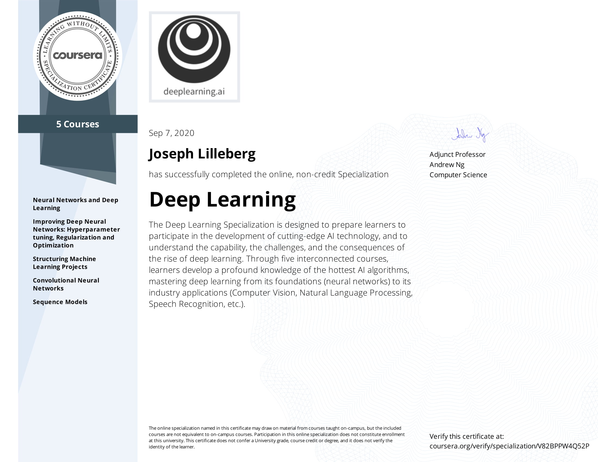
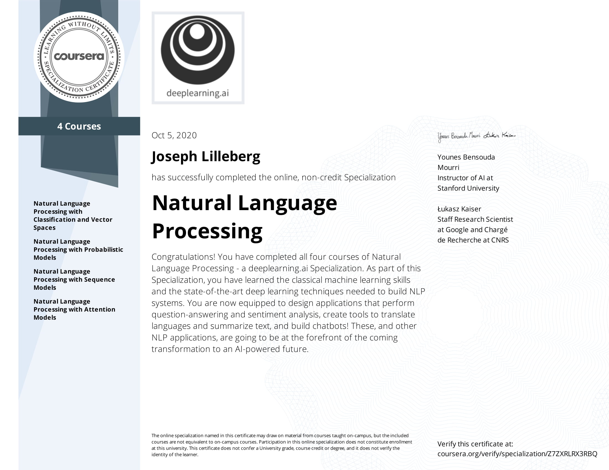
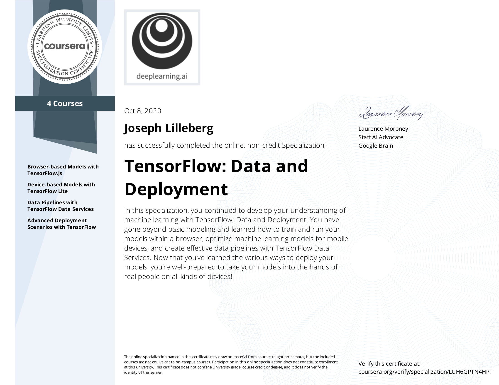
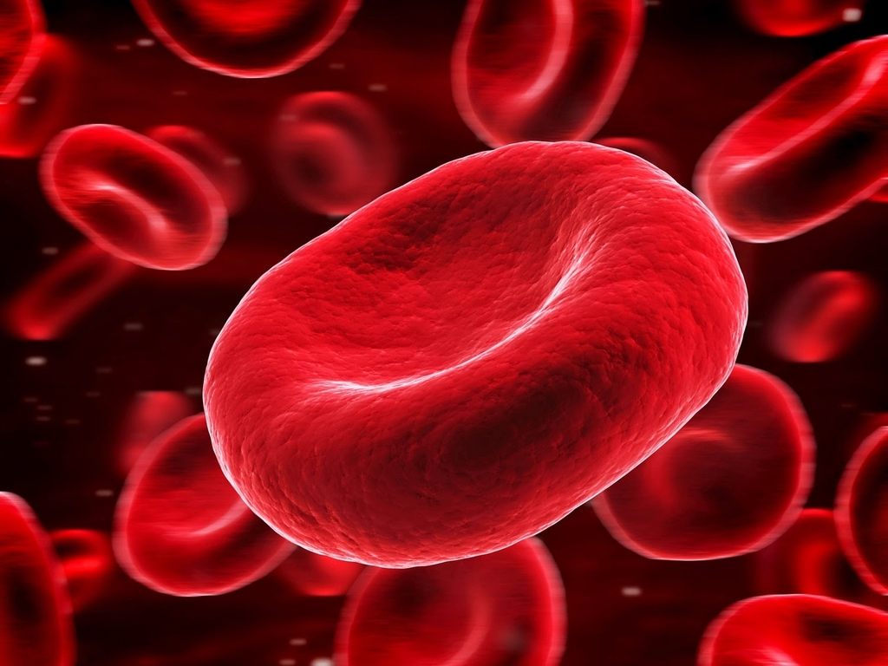

Joseph Lilleberg
Home
Portfolio
About
Contact
Home
Portfolio
About
Contact
All
Deep Learning
Blog Posts

Deep Learning Specialization
Deep Learning ...

Natural Language Processing Specialization
NLP ...
TensorFlow Developer Certificate Specialization
TensorFlow Developer ...
***

TensorFlow Data and Deployment Specialization
Data Deployment ...
Forcasting Platinum and Palladium Prices
Forecasted Platinum and Palladium prices using SARIMA models and Facebook's Prophet.

Detecting Malaria Infected Bloodcells with Neural Networks
Developed an image classifier using neural networks to detect malaria infected bloodcells.
Analyses of Presidential Transcripts
Webscraped, cleaned, and performed multiple analyses including sentiment analysis, text genereation, and topic modeling.
Modal title
Modal Text